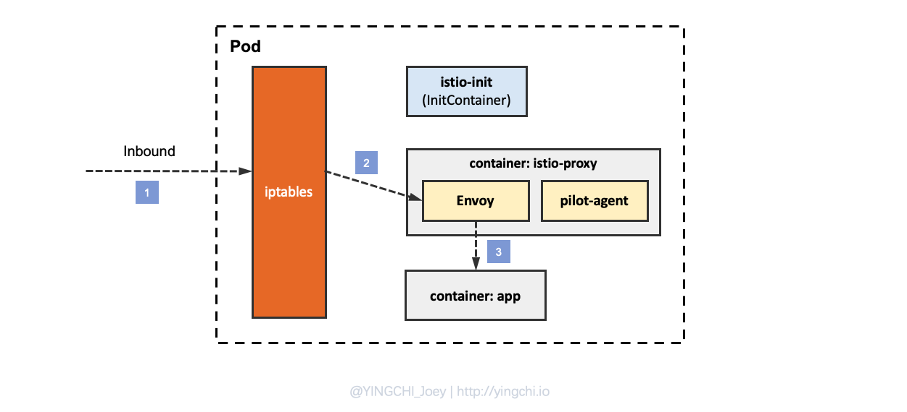

流量流经主机的基本过程
过程如下：
- Inbound 流量经过 NIC（网卡）进入主机的网络协议栈；
- 协议栈会根据预先定制的网络规则(iptables/netfilter)对报文进行检查；
- 协议栈规则检查后，符合要求的 Inbound 流量会从内核空间进入到用户空间，并进入指定监听端口的进程；
- 处于用户态的用户进程接收到网络流量报文进行处理后，将处理后的结果再通过用户空间返回给内核空间的网络协议栈；
- 网络协议栈检查报文，并将结果报文根据指定的网络策略通过网卡发送出去；
Sidecar 流量拦截基本过程
之前的文章已经介绍过了 Sidecar 的注入机制，注入到 Pod 中的即下面两个容器：
- istio-init：InitContainer，用于在 Pod 初始化过程中对 Pod 的 iptables 进行初始配置；
- istio-proxy：负责与 pilot 组件通信以及流量的控制；该容器运行时会启动两个关键的进程 pilot-agent 和 envoy。pilot-agent 进程会定时跟 istio 的 pilot 组件进行通信，envoy 进程会接收入口和出口网络流量。
注意：istio-proxy 和 Kubernetes 中的 kube-proxy 都是通过 iptables/netfilter 来处理网络流量。只不过 istio-proxy 位于 pod 网络空间，处理的是 pod 内的网络流量，而 kube-proxy 位于宿主机网络空间，处理的是宿主机内网络流量（因为 kube-proxy 是 daemonset，因此它位于 k8s 集群的每个 node 节点上）。
Sidecar 流量拦截其实指基于 iptables 规则，由 init 容器在 Pod 启动的时候首先设置iptables 规则。
iptables 规则拦截应用容器 Inbound/Outbound 的流量，目前只能拦截 TCP 流量，不能拦截UDP，因为Envoy目前并不支持UDP的转发。
下面来分析 Inbound 流量一系列走向：

-
Inbound 流量在进入 Pod 的网络协议栈时首先被 iptables 规则拦截；
-
iptables 规则将数据包转发给 istio-proxy 容器的 Envoy 进程；
-
Envoy 再根据自身监听器的配置，将流量转发给 app 容器中的应用进程。
注意：Envoy 在将流量转发给应用时也会流经内核协议栈由 iptables 规则处理，这里 init 容器设置的规则并没有拦截，因此中间省略iptables的处理过程；
然后来分析 Outbound 流量一系列走向：

- Outbound 流量由应用发出，首先被 iptables 规则拦截；
- iptables 规则将出口数据包转发给 istio-proxy 容器的 Envoy 进程；
- Envoy 再根据自身配置决定是否将流量转发到容器外。
流量拦截实现细节
Istio 流量代理转发模式
在Istio中，流量拦截的实现依赖initContainer iptables规则的设置，目前有两种流量拦截模式：REDIRECT模式和TPROXY模式。
REDIRECT 模式
REDIRECT 模式下，通过iptables，可以将所有的流量都重定向到一个特定的端口上。
例如下面一条 REDIRECT 规则：
iptables -t nat -A PREROUTING -p tcp -j REDIRECT --to-port 15001
即将所有流量都重定向到 15001 端口。看起来和 iptables 的 DNAT 很像，本质上 REDIRECT 就是一个特殊的DNAT规则，一般情况下，我们利用 iptables 做 DNAT 的时候，需要指定目标的IP和端口，这样 iptables 才能知道需要将数据包的目的修改成什么，而 REDIRECT 模式下，只需要指定端口就可以，iptables会自动帮我们判断需要设置的IP地址。
REDIRECT 模式虽然会进行源地址转换，但依然是默认的设置，因为配合 Istio提供的遥测数据依然可以进行调用链分析。在Kubernetes平台上Pod及其IP地址并不是持久不变的，会随着集群的资源状况动态销毁及迁移，所以源地址这种传统的软件系统记录客户端的方式并不适合云原生应用平台Kubernetes；
TPROXY 模式
除了利用 REDIRECT 模式，Istio还提供 TPROXY 模式，对于 TPROXY 模式，需要借助iptables和路由，比较复杂一点，用来做透明代理，操作的是mangle表。
同时需要原始客户端 socket 设置 IP_TRANSPARENT 选项，Linux提供了一个 IP_TRANSPARENT 选项 ，这个选项可以让程序bind一个不属于本机的地址，作为客户端，它可以使用一个不属于本机地址的IP地址作为源IP发起连接，作为服务端，它可以侦听在一个不属于本机的IP地址上，而这正是透明代理所必须的。
由于 TPROXY 模式并没有改变数据包，所以直接通过 getsockname 获取到原始的IP端口信息。
结合 iptables 分析 Inbound/Outbound 流量走向
Inbound 流量
- Inbound 首先匹配 iptables nat 表的 PREROUTING 链的第一条规则，因此 Inbound 流量被路由到 ISTIO_INBOUND 链；
- 在 ISTIO_INBOUND 链中，根据访问端口，匹配该链的第 X 条规则，流量路由到 ISTIO_IN_REDIRECT 链；
- 路由到 ISTIO_IN_REDIRECT 链的流量最终会从内核态打入到用户态的监听 xxxx 端口的 Envoy 进程；
- Envoy 进程处理完流量后，会将流量从用户态的进程传回内核态的网络协议栈，根据预先定义好的协议栈规则，流量会流经 OUTPUT 链，OUTPUT 链又会根据规则再把流量路由给 ISTIO_OUTPUT 链；
- 因为 Envoy 处理完流量最终要重新路由给目的端口的应用进程，因此处于 ISTIO_OUTPUT 链的第 X 条规则会被匹配（因为 Envoy 跟应用容器进程在同一个网络命名空间，因此环回地址 lo 被匹配），此时流量会重新从内核态返回到用户态，并进入监听端口为 X 的应用进程；
- 应用进程处理完后，将结果通过 socket 连接返回给 envoy 进程（用户态）；
- Envoy 再将流量通过 POSTROUTING 链、NIC，将响应流量返回给用户。
Outbound 流量
-
Outbound 流量首先会通过 iptables nat 表的 OUTPUT 链进入到 ISTIO_OUTPUT 链；
-
根据目的地址，匹配到 ISTIO_REDIRECT 链；
-
ISTIO_REDIRECT 链会将流量路由给 Envoy 进程；
-
Envoy 将处理后的 Outbound 流量重新通过用户态进入到内核态的网络协议栈，流量会首先经 OUTPUT 链到 ISTIO_OUTPUT 链；
-
流量最终会通过 POSTROUTING 链进入到 NIC 然后发送出去。